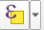
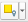

Selección y consulta de datos geoespaciales#
La selección y consulta de datos geoespaciales en QGIS permite seleccionar partes específicas de conjuntos de datos espaciales. Puede utilizarse para filtrar y analizar la información geoespacial, que son tareas esenciales cuando se trabaja con datos espaciales.
Existen tres tipos generales de selección o consulta en QGIS que cubrirán la mayoría de sus necesidades:
1. Selección manual. Consiste en la selección manual de entidades con una de las diversas herramientas de selección que ofrece QGIS.
2. Selección basada en atributos. Esta selección se basa en los valores de los atributos almacenados en la tabla de atributos.
3. Selección espacial basada en capas. Selección de entidades de una capa en función de relaciones geométricas especificadas con entidades de otra capa.
¡Ahora es su turno!
La consulta de datos es esencial para comprender y manipular sus conjuntos de datos. Puede seguir los pasos que se indican más abajo descargando este conjunto de datos.
Descargar Official Boundaries del Banco Mundial
Selección manual#
La selección manual se realiza principalmente mediante una de las herramientas de selección basadas en clics disponibles en la barra de herramientas del proyecto (alternativa: Edit > Select). Entre ellas figuran Select Feature(s), Select Feature by Polygon, Select Feature by Freehand y Select Feature by Radius.
Ejemplo: Select Feature(s)
Haga clic en
Select Feature(s)en el menú desplegable de .
.Seleccione las entidades haciendo clic en ellas o dibujando un rectángulo que se superponga a ellas.
Utilice la herramienta fuera de las entidades seleccionables para finalizar la selección.
Tip
Si mantiene presionada la tecla “Shift” durante la selección por clic, podrá seleccionar varias entidades.
Ejemplo: Selección manual de polígonos de países haciendo clic
Las otras opciones de funcionan de forma similar, seleccionando todas las entidades que se superponen con la geometría respectiva generada por las herramientas.
Haga clic en
Select Feature(s) by Polygonen el menú desplegable de.Seleccione las entidades haciendo clic izquierdo alrededor de las entidades que desea seleccionar.
Haga clic derecho cuando haya terminado de dibujar el polígono.
Ejemplo: Selección manual de países mediante un polígono
Note
Las entidades seleccionadas se resaltan en amarillo brillante en la vista geoespacial y en azul en la tabla de atributos.
Selección por atributos#
Se puede realizar una consulta basada en atributos específicos utilizando la herramienta Select Features by Expression disponible en

en la barra de herramientas del proyecto y la tabla de atributos (alternativa:Edit > Select > Select Entidades por expresión).
En la interfaz de herramientas, amplíe
Fields and Valuesen el panel derecho.Elija el campo en el que desea basar su selección haciendo doble clic sobre él (ahora debería aparecer en el panel de expresión de la izquierda).
Utilice una expresión con operadores particulares para especificar su selección en el panel izquierdo (p. ej., “’continent’ LIKE ‘Asia’” para seleccionar todas las entidades con el valor “Asia” en el campo “continente” ).
Tip
Haga clic en Show Values en la esquina superior derecha cuando se selecciona un campo para obtener una visión general sobre los diferentes valores del campo respectivo haciendo clic en All Unique/10 Samples. Haga doble clic en los valores para utilizarlos en el panel de expresiones de la izquierda.
Operador |
Función |
|---|---|
= |
igual a |
!= |
no igual |
< |
menor que |
> |
mayor que |
<= |
menor o igual a |
>= |
mayor o igual a |
Se pueden utilizar operadores como AND u OR para combinar diferentes consultas o criterios.
Operador |
Función |
|---|---|
AND |
lógico Y |
OR |
lógico O |
NOT |
lógico NO |
Operador |
Función |
|---|---|
LIKE |
concordancia de patrones |
IN |
comprueba si un valor está en una lista de valores |
IS NULL |
comprueba si hay valores NULL |
BETWEEN |
comprueba si un valor está dentro del rango especificado |
CASE WHEN |
expresiones condicionales |
Ejemplo: Seleccione todos los polígonos de países que compartan el valor “Asia” en el campo “continente”.
Selección espacial por capas#
La selección espacial de entidades permite seleccionar partes de una capa según su relación con entidades de otra capa geoespacial (p. ej., la selección de todas las entidades de punto de la capa A que se encuentren dentro de una entidad de polígono de la capa B). Para ello, utilice la herramienta “Select by Location” disponible en

en la barra de herramientas del proyecto (alternativa:Vector > Research Tools > Select by Location).
En la interfaz de la herramienta, elija la capa vectorial de la que desea seleccionar entidades mediante “Select features from” y la capa en la que desea basar la selección mediante “By comparing to the features from”.
Elija el operador geométrico que utilizará para seleccionar las entidades (véase el párrafo inferior).
En la ventana inferior, elija cómo desea proceder con las nuevas entidades seleccionadas. Las opciones incluyen:
Crear una nueva selección.
Añadir a la selección actual.
Seleccionar dentro de la selección actual.
Eliminar de la selección actual.
Las entidades seleccionadas se resaltan de nuevo en amarillo brillante en su interfaz geoespacial.
Ejemplo: Seleccionar las ciudades (entidades de punto) que se intersecan con el polígono “China”.
Ejemplo 2: Seleccionar todos los polígonos de países que tocan el polígono “China”.
Operadores geométricos#
Los operadores geométricos definen las condiciones de la relación entre la capa de origen y la de destino en las que se basará la selección. Hay ocho opciones en total:
Operación |
Descripción |
Ejemplo |
|---|---|---|
Interseca |
Las entidades de la capa de destino se seleccionan si se intersecan con entidades de la capa de origen. |
Seleccionar todas las carreteras que cruzan un polígono que representa un parque nacional. |
Contiene |
Las entidades de la capa de destino se seleccionan si contienen completamente entidades de la capa de origen. |
Seleccionar un polígono de país que contenga completamente polígonos más pequeños de ciudades. |
No interseca |
Las entidades no intersecas son aquellas que no comparten ningún punto o área común. |
Seleccionar distritos administrativos que no tienen límites ni zonas comunes. |
Igual |
Las entidades son iguales si sus geometrías son idénticas. |
Seleccionar dos segmentos de línea con exactamente el mismo conjunto de coordenadas. |
Toca |
Las entidades de la capa de destino se seleccionan si tocan entidades de la capa de origen. |
Seleccionar los parques que tocan una carretera específica. |
Superpuesta |
Las entidades de la capa de destino se seleccionan si comparten algún espacio común con las entidades de la capa de origen. |
Seleccionar parcelas que se superpongan con una zona de construcción propuesta. |
Dentro de |
Las entidades de la capa de destino se seleccionan si están completamente dentro de las entidades de la capa de origen. |
Seleccionar polígonos de edificios que se encuentran en su totalidad dentro de un polígono de un límite urbano. |
Cruza |
Las entidades de la capa de destino se seleccionan si se cruzan con entidades de la capa de origen. |
Seleccionar ríos que cruzan una carretera. |
Preguntas de autoevaluación#
Evalúe lo que aprendió
¿Cuáles son los tres tipos generales de selección o consulta en QGIS? Describa brevemente cada uno de ellos.
Respuesta
Selección manual: Las entidades se seleccionan con el mouse utilizando la herramienta
Select Featuresen el lienzo del mapa o haciendo clic en la columna en la tabla de atributos (los números a la izquierda de la tabla de atributos). En el lienzo del mapa, las entidades seleccionadas se resaltarán en amarillo brillante, en la tabla de atributos se resaltan en azul.Consultas basadas en atributos (Selección por atributo o por expresión): Se genera una consulta seleccionando atributos con valores específicos (p. ej.,
"population" > 10000 AND "type" = 'urban').Consultas espaciales (Selección por ubicación): Las entidades se seleccionan en función de su relación espacial con las entidades de otra capa (p. ej., las que se cruzan, se tocan o no se intersecan).
Nombre al menos cuatro operadores geométricos en consultas espaciales (p. ej., “interseca”, “dentro de”) y explique su función.
Respuesta
Operador |
Significado/Comportamiento |
|---|---|
Interseca |
Selecciona las entidades de la capa A que se intersecan (comparten cualquier parte) con las entidades de la capa B (se superponen de cualquier forma). |
Dentro de |
Selecciona las entidades de A que se encuentran completamente dentro de las entidades de B. |
Contiene |
Selecciona las entidades de A que contienen en su totalidad entidades de B. |
Toca |
Selecciona las entidades de A que se tocan (comparten un límite o punto) con las entidades de B, pero no se superponen internamente. |
Cruza |
Selecciona las entidades de A que pasan por las entidades de B (se cruzan). |
Superpuesta |
Selecciona entidades de A y B que se superponen, pero ninguna está completamente dentro de la otra. |
Ejemplos:
Si desea todas las carreteras que cruzan los límites de un parque, utilice “Interseca” o “Cruza”.
Si desea seleccionar todas las áreas en construcción que están completamente dentro de una zona inundable, utilice “Dentro de”.